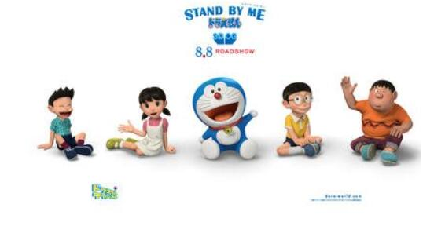

|  |
| 哆啦A梦 |
|
名字的意思是铜锣卫门。心肠好，乐于助人，做事很拼命，但却心肠软。每次大雄遇到困难，他总会帮大雄。但有时会用愚蠢的方法来帮助大雄。
当它吃不到铜锣烧或人们叫他狸猫时，脾气会非常暴躁。他原来是和妹妹一样，黄色的，而且有耳朵.
|
| 野比大雄 |
|
单纯天真的个乐天派，成天吊儿郎当地混日子。
性格懒惰，天生迟钝，什么时候都慢半拍，迟到纪录和罚站纪录等等屡次创造新纪录。 是个倒霉蛋。
|
| 源静香 |
|
大雄的青梅竹马，也是大雄未来的妻子。聪明乖巧、成绩优秀、心地善良，很受大家的欢迎。因为非常爱干净，所以很喜欢洗澡，一天不洗澡就觉得不舒服。
最喜欢吃烤白薯。梦想长大后成为国际航班的空中小姐、幼儿园教师。
|
| 冈田武 |
|
大雄的同班同学，大家都叫他“胖虎”。任性，蛮横，又贪婪。因为块头大，经常仗势欺人，总是把别人的东西占为己有，借给他的东西从来没还过。
虽然是个粗暴的孩子王，不过很重视友情。在外面总是耀武扬威，但一回到家里却对妈妈没有丝毫抵抗能力，对妹妹胖妹则是疼爱有加。
|
| 骨川小夫 |
|
大雄的同班同学，富家子弟。长得像只狐狸，却对自己的长相十分自恋，自我感觉过分良好，唯独对自己的身高太矮小感到苦恼。
梦想是成为一名服装设计师。喜欢追求流行，兴趣相当多样。收藏品也很丰富。产能更长炫耀家里很有钱，邀请大家到家里或别墅去玩，但总是把大雄排除在外。
|
@keyframes myfirst { from {background: red;} to {background: yellow;} }